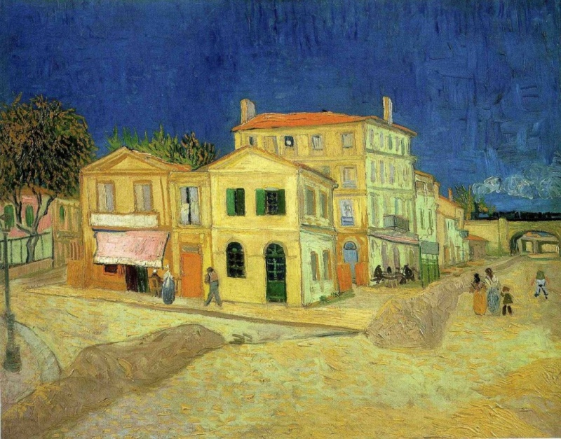

Roses and Sunflowers
ถูกวาดในปี 1886-1888 ที่กรุงปารีส ประเทศฝรั่งเศส เป็นภาพดอกทานตะวันที่อยู่รวมกับดอกไม้อืื่นในกระถาง และดอกทานตะวันที่วางบนพื้น
ภาพดอกทานตะวันแรกของเขา ชื่อว่า "Roses and Sunflowers" ซึ่งวาดในปี 1886 เป็นภาพดอกทานตะวันที่อยู่รวมกับดอกไม้อืื่นในกระถาง
คลิกเพื่อเปิดหน้าที่2

ภาพทานตะวันชุดนี้เป็นส่วนหนึ่งของชุดภาพ ‘ของตกแต่งของบ้านสีเหลือง’ (Décoration for the Yellow House)
โดยบ้านสีเหลืองที่ว่านี้คือบ้านที่แวนโก๊ะ เช่าอาศัยในเมือง อาร์ลซึ่งทาสีเหลืองทั่วทั้งหลัง โดยแวนโก๊ะได้ลงมือวาดภาพดอกทานตะวันกับแจกัน จำนวน 4 ภาพ
ในชื่อชุดว่า "Initial Versions" เพื่อใช้ในการตกแต่งห้องพักของ "โกแกง" (Paul Gauguin) เพื่อนซี้ศิลปินสายอิมเพรสชันนิสต์เหมือนกันเขา
Click on the picture